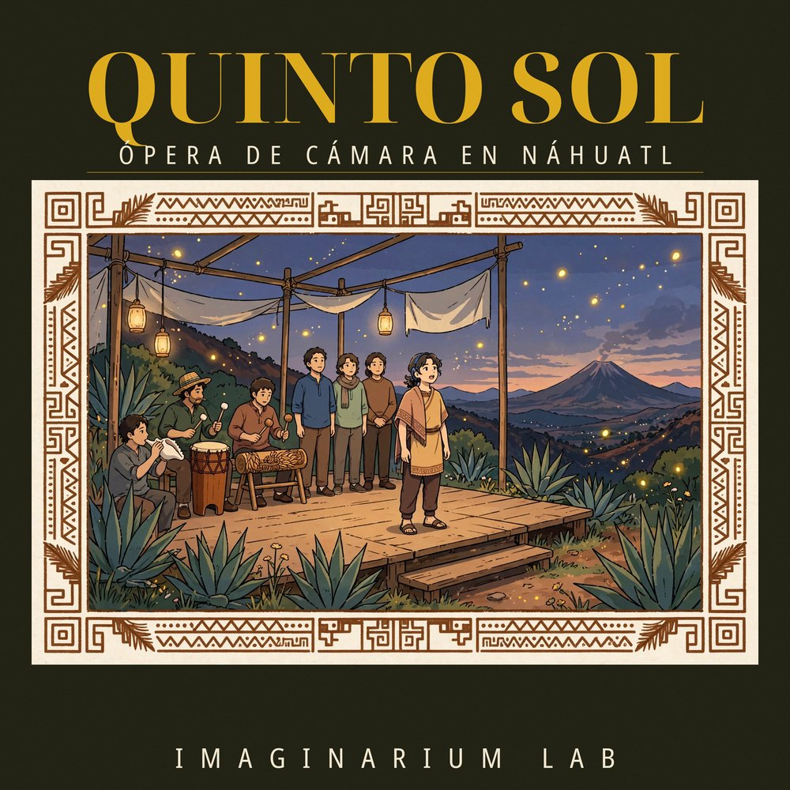

SceneI
Quinto Sol I · Nican in Teotihuacan omocenquixque in
3:48 · The gods gather at Teotihuacan
Imaginarium Waves · Great Studios
Chamber operas sung in the Indigenous languages of the Americas.
Original works · Ancestral languages as living voices

Imaginarium Waves Opera is the opera house of Imaginarium Waves and Great Studios — a home for original chamber operas sung in the Indigenous languages of the Americas.
Here you will find complete operas, scenes, arias, and behind-the-scenes glimpses of productions in the making — new works that treat ancestral languages as living voices.
Each production is staged as cinematic film: the intimacy of chamber opera, documented and photographed with the care of a feature production. One work, one culture, one language at a time — told with reverence for the living cultures that keep these languages alive.
“We do not revive dead languages. We give living voices a stage.”
Subscribe, and witness the birth of a sun.
World Premiere · First Production
The proud hesitate. The humble become the sun.
Our first production retells the Mexica myth of the Fifth Sun at Teotihuacan: the gods gather in darkness, and the humble Nanahuatzin leaps into the fire so that a new sun may be born — while proud Tecuciztecatl hesitates at the edge of the flames.
An original chamber opera in eight scenes, sung entirely in Nahuatl, presented as a cinematic film with Spanish subtitles. Solo voices and a small chorus carry the drama over a chamber ensemble joined by documented Mesoamerican percussion.
A note on the language: the Nahuatl text is drawn from colonial-era sources (including the Cantares Mexicanos tradition). Its philological validation is ongoing and a review by native Nahua speakers is still pending — we publish this note openly, in the same spirit of respect with which the work was made.
The complete opera, scene by scene — now playing on YouTube. Nahuatl titles are the incipits of each scene.
SceneI
3:48 · The gods gather at Teotihuacan
SceneII
1:56 · “Who shall be the sun?” they ask
SceneIII
3:34 · Below, where it is still darkest
SceneIV
3:42 · “I give them the quetzal feathers”
SceneV
3:28 · “Now comes the fire”
SceneVI
3:54 · “One, two, three, four” — the count to the leap
SceneVII
2:27 · “I myself shall go”
SceneVIII
4:00 · “Now the sun comes forth”
An acoustic, theatrical sound: a small string body, piano and woodwinds, with the wide dynamic range of a live hall — nothing between the voice and the listener.
Arias, duets and through-composed scenes that follow the dramatic arc of the myth — the gathering of the gods, the sacrifice, the birth of the sun.
Documented Mesoamerican instruments — huehuetl and teponaztli drums, conch shells and clay flutes — grounding each score in the sound world of its culture.
Every production of the house is documented in full — who made it, from what sources, and in which forms it lives. Provenance is part of the work.
One production, four artefacts:
Chamber opera is the closest seat in the house: one voice, one drum, one story. Scene I takes less than four minutes — and a sun is born.
▶ Follow the house on YouTubeNew productions are in preparation — more operas born of other cultures, languages and historical moments of the Americas. The next suns are being written.
Imaginarium Waves Opera es la casa de ópera de Imaginarium Waves y Great Studios: un escenario para óperas de cámara originales cantadas en las lenguas originarias de América.
Nuestra primera producción, QUINTO SOL, narra el mito mexica del Quinto Sol en Teotihuacán: los dioses se reúnen en la oscuridad y el humilde Nanahuatzin se arroja al fuego para que nazca un nuevo sol. Cantada íntegramente en náhuatl, con subtítulos en español.
Aquí encontrarás óperas completas, escenas, arias y el detrás de cámaras de las producciones que vienen: obras nuevas que tratan las lenguas ancestrales como voces vivas. Las ocho escenas de Quinto Sol ya están publicadas en YouTube — míralas desde la sección The Eight Scenes.
Suscríbete y sé testigo del nacimiento de un sol.
This house reaches its audiences through the nonprofit circuit of Scope Foundation and Fundación Contacto Humano, who carry these works into their communities. Donations are received by the foundations — every gift keeps this music, and the living cultures behind it, in front of new audiences.
❤ Donate — Scope Foundation ❤ Donate — Fundación Contacto Humano